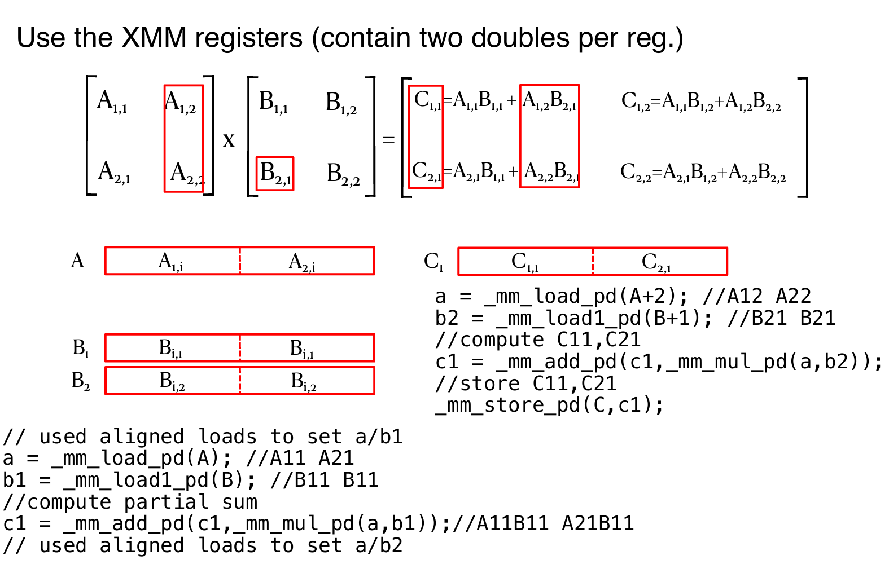

Parallelism
X86 SIMD Intrinsics
SIMD指令可以通过对给定的指令集架构（如x86）进行扩展来访问。这些指令集扩展通常被称为“向量指令”，使用专门的“向量寄存器”来执行数据并行计算。它们使用专门的'向量'寄存器，而且也会使用extended SIMD指令去进行load/store，计算，etc。
内建函数是C语言中的函数和过程，允许开发者间接使用汇编指令。通过内建函数，程序员可以利用SIMD扩展指令集的功能，进行高效的并行计算，而不需要直接编写低级的汇编代码。通过内建函数，开发者可以间接地使用汇编指令。这些内建函数背后会自动调用对应的SIMD指令（如Intel的AVX或SSE指令），但是开发者无需手动编写或了解汇编代码。
内建函数与SIMD扩展指令（如Intel的AVX或SSE指令）之间有一一对应的关系。也就是说，每个SIMD指令都有对应的内建函数。例如，_mm256_add_ps 是一个内建函数，用来执行AVX指令中的256位单精度浮点数加法操作。
Example: SIMD Array Processing

Loop
在这一部分中，将展示如何利用SIMD技术来优化循环。具体来说，这种技术叫做循环展开：Loop Unrolled
Loop Unrolled
D标准扩展（Double Standard Extension）：
- 在RISC-V架构中，
D扩展用于支持双精度浮点运算，它是在F标准扩展（支持单精度浮点运算）的基础上扩展的。
假设：
t1最初包含数组元素的地址，t2包含操作的最后一个元素的地址。f0寄存器保存标量值s。8(t2)表示数组的最后一个元素的地址。
Loop: fld f2, 0(t1) # 加载数组元素到f2
fadd.d f10, f2, f0 # 将数组元素与标量值s相加
fsd f10, 0(t1) # 将结果存回数组
addi t1, t1, -8 # 将t1递减，指向下一个元素
bne t1, t2, Loop # 如果t1 != t2，跳转回循环开始
循环展开的概念：循环展开是一种优化技术，目的是减少循环控制的开销（如条件判断和跳转指令），通过增加每次循环迭代的工作量来提升程序的执行效率。
只有每4次循环会有1次循环开销：每展开一次循环，控制开销就减少1次，因此可以显著提高执行效率。这里循环开销(loop overhead)指的是：与循环控制相关的计算和处理所带来的性能成本
主要包括以下几个方面：循环条件判断开销，循环跳转开销，迭代变量更新开销，内存访问开销， 循环控制指令的消耗（每次循环迭代时，CPU都会执行一些控制指令，例如判断是否跳出循环、更新迭代变量等）
循环展开适用于loop_limit(mod 4)的情况：即循环次数可以被4整除的情况下，展开效果更好。
使用不同的寄存器消除流水线中的数据危害：每次迭代执行多个操作时，如果多个操作使用相同的寄存器，可能会导致数据依赖问题（数据危害）。通过使用不同的寄存器，避免这种情况，确保流水线的高效运行。
循环展开后的代码： 代码展开后，增加了每次迭代的工作量，同时减少了循环控制的开销：
fld f2, 0(t1) # 加载第1个元素
fld f3, -8(t1) # 加载第2个元素
fld f4, -16(t1) # 加载第3个元素
fld f5, -24(t1) # 加载第4个元素
fadd.d f10, f2, f0
fadd.d f11, f3, f0
fadd.d f12, f4, f0
fadd.d f13, f5, f0
fsd f10, 0(t1)
fsd f11, -8(t1)
fsd f12, -16(t1)
fsd f13, -24(t1)
addi t1, t1, -32
bne t1, t2, Loop
在这个展开的版本中，一次迭代处理了4个数组元素，并且通过使用4个不同的寄存器来存储临时结果，从而避免了数据依赖问题。
如果手动展开循环，每次迭代处理多个元素：
for(i = 1000; i > 0; i = i - 4) {
x[i] = x[i] + s;
x[i-1] = x[i-1] + s;
x[i-2] = x[i-2] + s;
x[i-3] = x[i-3] + s;
}
在这个展开的版本中，4个相邻的数组元素同时被处理，从而减少了循环控制的开销。
一般化的循环展开：假设有一个循环需要迭代n次，你可以通过将每次迭代的体部分复制k次来实现展开。
- 其中，
k是展开的次数，表示每次迭代处理多个数据。 - 假设
n mod k != 0，即循环次数不能被k整除。在这种情况下，剩余的迭代次数将需要用一个完整的循环来处理。
RISC-V Vector Extension
RISC-V 向量寄存器
- 32个向量寄存器：RISC-V向量扩展提供了32个向量寄存器，用于存储向量数据。每个寄存器可以处理多个数据元素。
- 需要设置数据长度和并行寄存器的数量：为了使得RISC-V的向量扩展能够工作，程序员需要设置向量长度（
vconfig）。例如，vl表示加载指定长度的向量数据，vs表示向量长度设置，用来控制寄存器中加载多少元素。
下面的汇编代码，展示了如何每一次循环中载入四个float，每一个都加上标量s，然后返回：
# assume x1 contains size of array
# assume x4 contains address of scalar s
vconfig 0x63 # 4 vregs, 32b data (float)
vflw.s v1., (x4) # load scalar value into v1
loop:
vsetvl x2, x1 # will set vl and x2 both to min(maxvl, x1)
vflw v0, 0(t1) # will load 'vl' elements out of 'vec'
vfadd.s v2, v1, v0 # do the add
vsw v2, 0(t1) # store result back to 'vec'
slli x5, x2, 2 # bytes consumed from 'vec' (x2 * sizeof(float))
add t1, t1, x5 # increment 'vec' pointer
sub x1, x1, x2 # subtract from total (x1) work done this iteration (x2)
bne x1, x0, loop # if x1 not yet zero, still work to do
其中，maxvl 代表向量长度的最大值（vector length），即处理器支持的最大并行数据元素的数量。它决定了每次可以并行处理多少个数据元素。具体来说，vsetvl 指令用于设置每次操作的向量长度（vl），而 maxvl 是硬件支持的最大向量长度，确保不会超出硬件的并行处理能力。当然，这里的maxvl应该是4，而取min的原因也是因为不整除情况下，最后是凑不出一个maxvl的。
硬件支持：
- 硬件的并行处理：RISC-V向量扩展使得每个向量寄存器可以并行处理多个数据元素。硬件会根据配置自动处理不同长度的向量。
- 2-lane, 4-lane, 8-lane的实现：硬件的实现可以是2路、4路、8路并行，每个时钟周期处理多个数据元素。这些路数是硬件实现的，程序员无需关心。
对两个单精度浮点向量进行加法运算。给出了一个例子：展示了如何对两个向量的对应元素进行加法操作，并通过SSE指令在x86汇编语言中实现。目标是对两个单精度浮点数向量进行加法操作。给定两个向量 v1 和 v2，计算它们的加法结果并存储在 vec_res 向量中，操作如下：
vec_res.x = v1.x + v2.x;
vec_res.y = v1.y + v2.y;
vec_res.z = v1.z + v2.z;
vec_res.w = v1.w + v2.w;
这部分展示了如何使用SSE指令在x86架构中实现上述向量加法。SSE是一个SIMD指令集，可以在单个指令周期内并行处理多个数据元素。通过SIMD指令，我们可以一次性处理多个浮点数:
movaps address-of-v1, %xmm0
// v1.w | v1.z | v1.y | v1.x -> xmm0
addps address-of-v2, %xmm0
// v1.w+v2.w | v1.z+v2.z | v1.y+v2.y | v1.x+v2.x -> xmm0
movaps %xmm0, address-of-vec_res
movaps address-of-v1, %xmm0：
- 这条指令将
v1向量的值加载到xmm0寄存器中。movaps是一个SSE指令，它从内存中加载数据到一个SSE寄存器中。 - 这时，
xmm0寄存器中存储了v1向量的4个单精度浮点数（即v1.x, v1.y, v1.z, v1.w）。
addps address-of-v2, %xmm0：
- 这条指令将
v2向量的值加载到xmm0寄存器中，并执行加法操作。addps是一个SSE指令，它对寄存器中存储的4个单精度浮点数逐一执行加法。 - 计算结果是：
v1.x + v2.x、v1.y + v2.y、v1.z + v2.z、v1.w + v2.w，这些结果存储在xmm0寄存器中。
movaps %xmm0, address-of-vec_res：
- 这条指令将
xmm0寄存器中的结果存储回vec_res向量的内存地址。结果是，vec_res.x = v1.x + v2.x，vec_res.y = v1.y + v2.y，vec_res.z = v1.z + v2.z，vec_res.w = v1.w + v2.w。
SSE内建函数
- 内建函数（Intrinsic functions） 是可以在高级语言（如C语言）中使用的函数，提供了对底层SIMD指令的访问。通过这些内建函数，开发者可以在不直接写汇编代码的情况下使用SIMD指令。
- SSE内建函数示例：
_mm256_add_ps：这个函数用于执行并行的浮点加法操作，处理两个单精度浮点数向量。对应的SSE指令是ADDPD。
SSE内建函数的类型：
- 数据类型：
_m128：表示128位的SIMD数据类型，每个寄存器包含4个32位单精度浮点数。_m256：表示256位的SIMD数据类型，每个寄存器包含8个32位单精度浮点数。- 加载和存储操作：
_mm_load_pd：加载对齐的双精度浮点数。_mm_store_pd：将双精度浮点数存储到内存。_mm_loadu_pd：加载非对齐的双精度浮点数。_mm_storeu_pd：将非对齐的双精度浮点数存储到内存。- 算术操作：
_mm_add_pd：并行加法操作，处理双精度浮点数。_mm_mul_pd：并行乘法操作，处理双精度浮点数。
DGEMM as an Example
DEGMM 通常是指 双精度矩阵乘法（Double Precision General Matrix Multiply），它是进行矩阵乘法运算时使用的一个术语，特别是在涉及高精度（双精度）浮点数运算的情况下。
- D：表示“双精度”（Double Precision），即使用64位浮点数进行计算，提供更高的数值精度。
- GMM：表示通用矩阵乘法（General Matrix Multiply）。它是矩阵运算中的一种常见操作，通常用来描述矩阵与矩阵、矩阵与向量之间的乘法运算。

比如上图中右边红色的值是由A B对应的行和列内积得来的，但是残酷的现实是，由于矩阵的元素是由数组存放的，因此A中的元素其实是跳着访问的，破坏了spatial locality。
void dgemm_scalar(int N, double *A, double *B, double *C) {
for (int i = 0; i < N; i++) {
for (int j = 0; j < N; j++) {
double Cij = 0;
for (int k = 0; k < N; k++) {
Cij += A[i + k * N] * B[k + j * N];
}
C[i + j * N] = Cij;
}
}
}
虽然说循环很多，而且还有跳着行访问元素的情况，但是抛开这些不谈，依然有并行化的空间：首先是Cij+=的这个式子，明显可以是可以使用SIMD的；另外就是每一个Cij元素的计算都是独立的。这两点给出了并行化的可能性。

上面展示了 2x2矩阵乘法 的实现，使用了 SSE指令集 进行优化。矩阵乘法的过程利用了 XMM寄存器，每个寄存器包含2个双精度浮点数，利用SIMD指令并行处理数据来加速运算。
XMM寄存器：XMM寄存器是SSE指令集中的寄存器，每个寄存器包含两个 双精度浮点数（64位浮点数），即每个寄存器大小为128位。这样，可以在一次操作中加载和处理多个数据元素。
通过 _mm_load_pd 和 _mm_store_pd 等指令，数据被加载到XMM寄存器中进行并行计算。
A 和 B 是要进行乘法操作的矩阵。矩阵 A 和 B 中的每个元素都对应加载到 XMM寄存器 中。
a = _mm_load_pd(A);: 这条指令将矩阵A的元素（如A1,1和A2,1）加载到XMM寄存器。b1 = _mm_load_pd(B);: 这条指令将矩阵B的元素（如B1,1和B2,1）加载到另一个XMM寄存器。
计算部分：
_mm_mul_pd(a,b1)：这条指令将a和b1中的元素逐个相乘，得到部分乘积。类似地，矩阵乘法中每个元素都需要乘法和加法操作。_mm_add_pd(c1,_mm_mul_pd(a,b1))：通过_mm_add_pd指令，将a和b1乘积的结果与其他乘积结果累加，得到最终的矩阵C中的元素。
存储结果：最后，通过 _mm_store_pd(C, c1); 将结果存储回内存中的矩阵 C。
上面的操作计算出了C11 C21；并且与此同时可以并行地计算出C21 C22。注意这里是观察了元素式子的组成，然后尽可能的进行简化运算；同时要注意ABC的分块（注意图片中的A的分块打错了，应该是\(A_{i,1} \&A_{i,2}\)）！